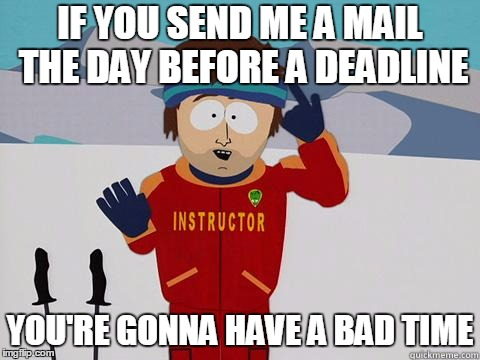

Projet Info 2A
Application de Rencontres
Contact

antoine.brunetti@insee.frRappel du besoin
Fonctionnalités de base
- Inscription des utilisateurs
- Réalisation d'une messagerie
- Prise de rendez vous
- Création d'affinités entre les membres
- Historique de messagerie
Fonctionnalités de avancées
- Notifications
- Sauvegarde BDD
- Chatbot
- Système de suggestions
L'api Foursquare
Application Programming Interface
Que nous dit wikipedia
En informatique, une interface de programmation applicative (souvent désignée par le terme API pour application programming interface) est un ensemble normalisé de classes, de méthodes ou de fonctions qui sert de façade par laquelle un logiciel offre des services à d'autres logiciels.
Dit autrement
- Brique applicative qui offre un service, et qu'on utilise sans savoir comment elle fonctionne
- 2 types
- Les bibliothèques logicielles
- Les web services
-
Note : vous risquez d'utiliser les deux
L'api foursquare 1/2
- Récupère des lieux par catégories
- La description complète des différents endpoints de l'api est ici
L'api foursquare 2/2
- Renvoie des json (JavaScript Object Notation)
- Un autre format très courant du web avec le xml
- Un example d'utilisation
Doc de l'api
Déroulement du projet
Les deadlines et les livrables
- 27 septembre : rendu du dossier d'analyse
- 15 novembre 20h : rapport final et code définitif
- 27 novembre : soutenance
Proposition de méthodes de travail
- Fonctions "faciles"
-> pair programming : 2 sur un poste (de préférence de niveau différent) - Fonctions "complexes" et initialisation
du projet
-> mob programming : tous sur un poste
Petit tips
- Passez du temps sur l'étude préalable et la conception générale
- Cernez vos cas d'utilisations, les acteurs etc (diagramme CU)
- L'autre diagramme important est celui de classes, il doit guider vos développements
- Priorisez les développements par la valeur
- Développez un ensemble de petits modules simples plutôt qu'une énorme main